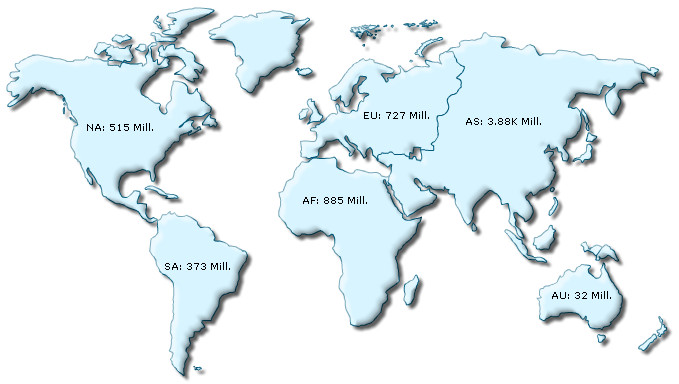

| Creating maps using various methods | ||
|
FusionMaps XT uses FusionCharts JavaScript Class that takes care of all the products of FusionCharts Suite XT including FusionMaps XT. FusionCharts JavaScript Classes now provide various methods of rendering maps. You render maps using either of the following methods:
Let's discuss how each of the methods works. |
||
| Using normal rendering method | ||
|
In normal rendering method, you need to perform at least 3 steps to render a map :
Additionally you can set more optional settings like set renderer type, set a map transparent » myMapJSObj.setTransparent(true);etc. Following sample code illustrates the implementation of this method: Note » We have already learnt this method in the weekly sales sample in Creating your first map page. This method is fully backward compatible. |
||
<html>
<head>
<title>My First map using FusionMaps XT</title>
<script type="text/javascript" src="Maps/FusionCharts.js">
</script>
</head>
<body>
<div id="mapContainer">FusionMaps XT will load here!</div>
<script type="text/javascript"><!--
var myMap = new FusionCharts( "Maps/FCMap_World.swf",
"myMapId", "400", "300", "0", "1" );
myMap.setXMLUrl("Data.xml");
myMap.render("mapContainer");
// -->
</script>
</body>
</html> |
||
|
In the above code we have:
The code will render a map like the one shown below:  |
||
|
||
| Using compact rendering method | ||
|
Since v3.2 FusionCharts can be rendered using a compact one line code. This reduces two lines of code for each map and makes the implementation easy and seamless. This is achieved using the static render function of FusionCharts class. A typical example is as follows: var myMap = FusionCharts.render( "Maps/FCMap_World.swf", "myMapId", "400", "300", "mapContainer", "Data.xml" , "xmlurl" ); In this mode you need to make sure that you have:
The last parameter which declares the type of the data (xmlurl) is optional. If skipped, the function will take xmlurl as the default data format. |
||
| For details on FusionCharts constructor, render() function and the property-names for the object-based parameter, please read API > Methods.
Complete Reference to all the properties, functions and events of FusionCharts classes is provided in API Reference section. |